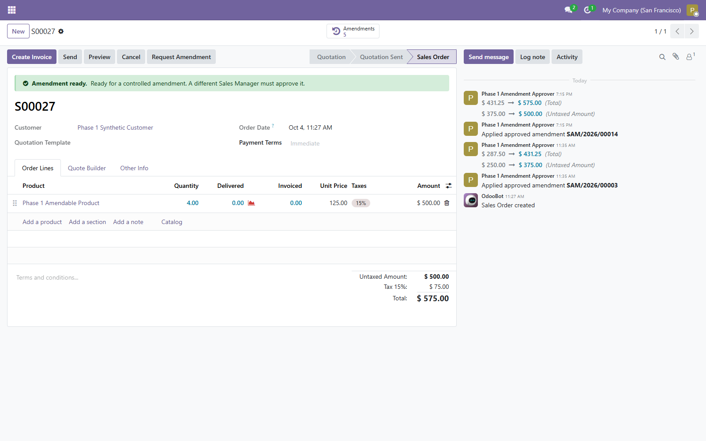
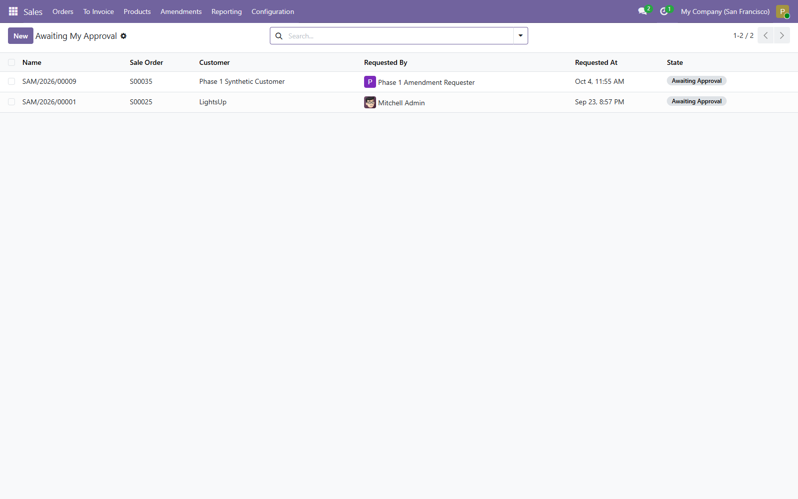
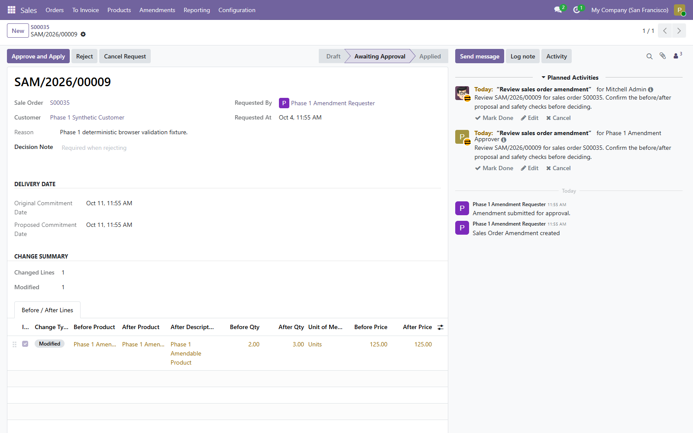
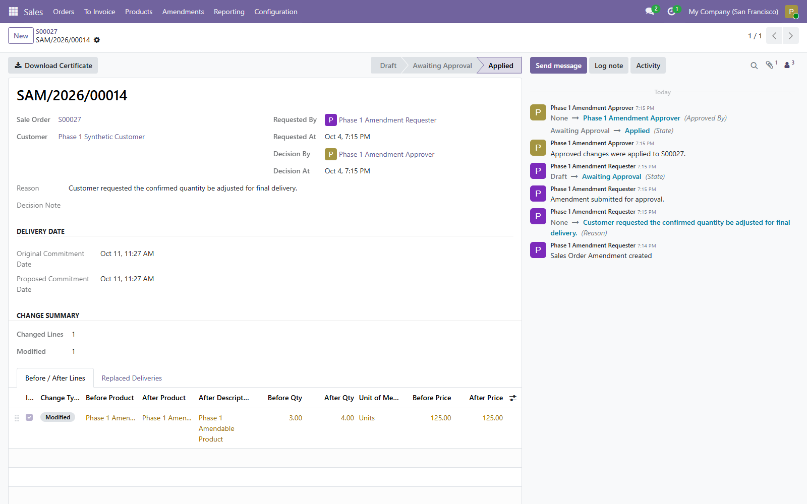
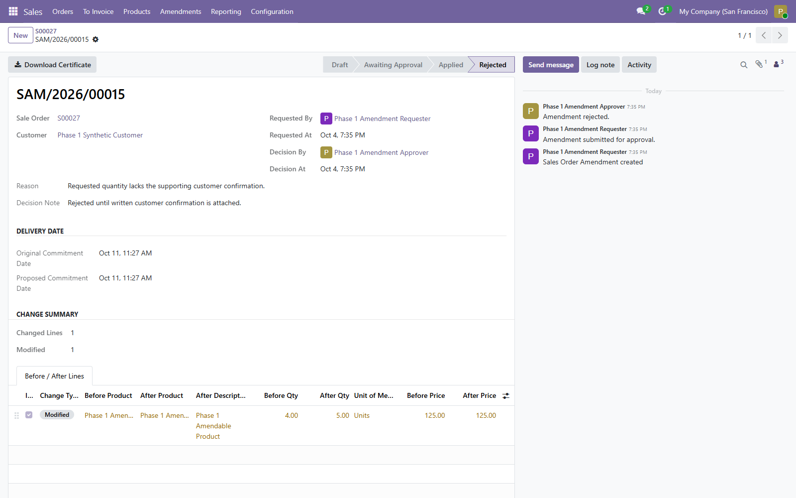
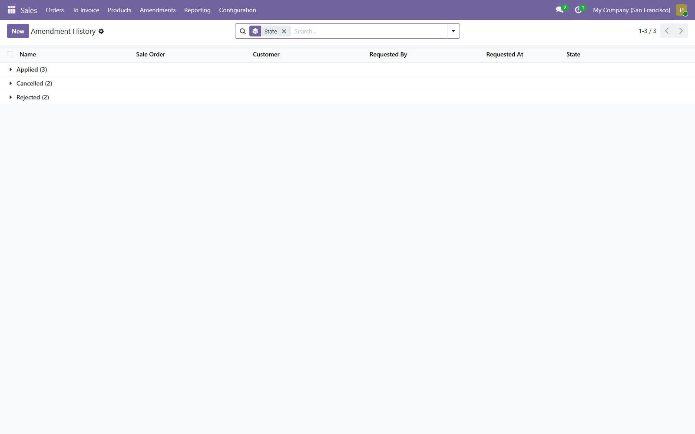
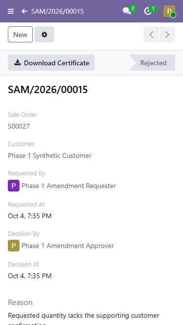
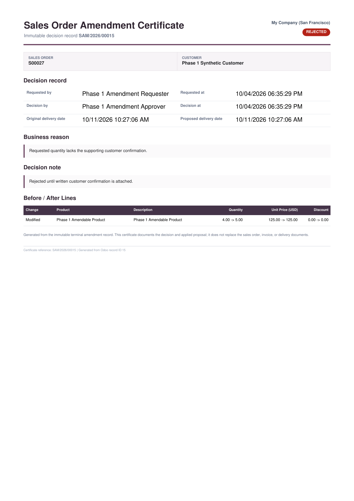

Overview
Sales Order Amendments controls corrections to a confirmed sales order before delivery or invoicing. It preserves the order number, records immutable before-and-after values, requires approval by a different Sales Administrator and retains replaced delivery records in the audit trail.

Final product screens
These are genuine Odoo 19 screens captured from the final 19.0.1.2.0 build with synthetic records.








Requirements
| Item | Requirement |
|---|---|
| Odoo | Version 19 Community or Enterprise |
| Hosting | Odoo.sh or self-hosted Odoo that permits custom add-ons |
| Dependency | sale_stock; Odoo installs its standard Sales and Inventory dependencies |
| Unsupported hosting | Odoo Online databases that do not permit third-party custom add-ons |
Installation
- Place
modapps_sale_order_amendmentin an Odoo 19 add-ons path. - Restart Odoo, enable developer mode and update the Apps list.
- Search for Sales Order Amendments and select Activate.
- Assign requesters Sales / User access and approvers Sales / Administrator access.
- Use at least two accounts for testing because a requester cannot approve their own request.
Roles and responsibilities
| Role | Access |
|---|---|
| Sales / User | Creates and manages their own amendment requests in allowed companies. |
| Sales / Administrator | Reviews company requests and approves, rejects or cancels them. |
The server blocks self-approval even when the requester also has administrator access. Other salespeople cannot browse another requester's amendments.
Supported proposal values
An amendment can change the commitment date, product, line description, quantity, unit of measure, unit price, discount, taxes, sequence, sections, subsections and notes. Lines can be added. Clear Included to remove an original line while preserving it in the comparison.
Request and approval workflow
- Open a confirmed sales order. Its eligibility banner explains whether a controlled amendment is available and why.
- Select Request Amendment.
- Enter a business reason and change a proposed date or at least one After value.
- Select Submit for Approval. The proposal freezes and review activities go only to eligible independent managers.
- A different Sales Administrator opens Awaiting My Approval, the activity, or the source order's Amendments smart button.
- The approver reviews the comparison and selects Approve and Apply, or enters a decision note and rejects it.
- Odoo locks and revalidates the source order. If still safe and unchanged, it applies the proposal through standard Odoo logic.
- The terminal audit exposes its stored Download Certificate action.
Request states
| State | Meaning |
|---|---|
| Draft | Editable request and proposal. |
| Awaiting Approval | Frozen proposal waiting for a different administrator. |
| Applied | Proposal passed final validation and was applied. |
| Rejected | Administrator rejected it with a decision note; order unchanged. |
| Cancelled | Requester or administrator cancelled it; order unchanged. |
Audit and decision certificate
The record keeps its reference, source order, company, customer, requester, decision actor, timestamps, reason, decision note, original and proposed dates, before-and-after line values, change type and replaced deliveries.
Every amendment applied or rejected after 19.0.1.2.0 stores a one-page PDF certificate. Certificate rendering belongs to the same transaction: a rendering failure rolls back the decision instead of leaving an incomplete audit.
Approval preserves the sales order number and original order date. The old unprocessed delivery is cancelled and linked to the amendment; standard confirmation creates its replacement.
Safety boundary
The module accepts only a confirmed order with a direct, unprocessed warehouse-to-customer delivery and no downstream work that would make automatic correction ambiguous.
It refuses
- Invoices or refunds, including drafts; payment transactions; and down payments.
- Picked, completed, returned or manually cancelled stock.
- Orders changed after the amendment snapshot was captured.
- Dropship, make-to-order, multi-step or other special routes.
- Configured or combo products, subscriptions and expense-derived lines.
- Services that create projects or tasks.
These checks run when the request is created, submitted and approved.
Operational expectations
- Only one Draft or Awaiting Approval request can exist per order.
- The module does not send automatic email. It creates standard Odoo review activities for eligible independent managers and closes only amendment-owned activities on terminal actions.
- It does not implement pre-confirmation thresholds or a multi-level approval matrix.
- There is no automatic rollback after application.
- Back up the database before uninstalling a production module.
Upgrade to 19.0.1.2.0
- Back up the database and filestore.
- Replace the add-on directory.
- Restart Odoo and update Sales Order Amendments from Apps.
- Reload long-lived browser tabs.
- Validate one new decision and download its certificate.
Existing requests and audit records are preserved. Older terminal records do not receive certificates retroactively.
Changelog
19.0.1.2.0: actionable eligibility guidance, stored applied/rejected decision certificates, rejection actor/time, and transactional report-failure protection.
19.0.1.1.0: role queues, independent-manager activities, activity cleanup and clearer change summaries.
Troubleshooting
| Symptom | Check |
|---|---|
| Submit button missing | A real date or line-value difference is required; a reason alone is not a proposal. |
| Approval buttons missing | Open through the source order's Amendments smart button. Confirm Sales / Administrator access and a different requester. |
| Unsafe-order message | Inspect invoices, payments, deliveries, returns, routes and special product or service lines. |
| Stale-request message | The source order changed after capture. Cancel and create a fresh request. |
| Active-request message | Complete or cancel the current Draft or Awaiting Approval request. |
Support
Email info@modapps.dev. Include the Odoo 19 build, module version, request reference, relevant company and route configuration, reproduction steps and server traceback. Do not send passwords, API keys, customer secrets or unredacted personal data.
Response target: initial response within one business day. Resolution time depends on reproducibility, Odoo configuration and severity.